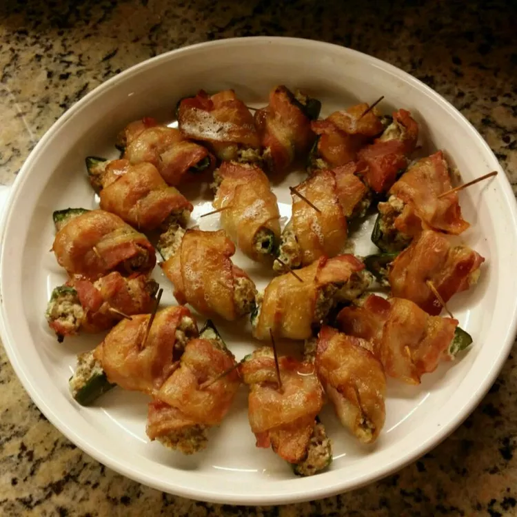

Jalapeno Poppers

This is a recipe for stuffed jalapenos I had at a baby shower in Texas. I loved them and have made them for every party since. They are always anxiously requested, a HIT AT EVERY PARTY!!!! Use toothpicks to secure the bacon around the stuffed jalapenos. Be sure to use a pan that won't let the bacon drip all over the oven while cooking!
Ingredients for Jalapeno Poppers
- 2 (12 ounce) packages ground sausage
- 2 (8 ounce) packages cream cheese, softened
- 30 jalapeno chile peppers
- 1 pound sliced bacon, cut in half
Steps
- Preheat oven to 375 degrees F (190 degrees C).
- Place ground sausage in a large, deep skillet. Cook over medium high heat until evenly brown.
- Drain sausage and place in a medium bowl. Mix with the cream cheese.
- Cut jalapenos in half lengthwise. Remove the seeds. Stuff each jalapeno half with equal portions of the sausage and cream cheese mixture. Wrap with half slices of bacon. Secure bacon with toothpicks.
- Arrange wrapped jalapenos in a large, shallow baking dish. Bake in the preheated oven 20 minutes, or until the bacon is evenly brown.
Recipe originally from:
Allrecipes.com